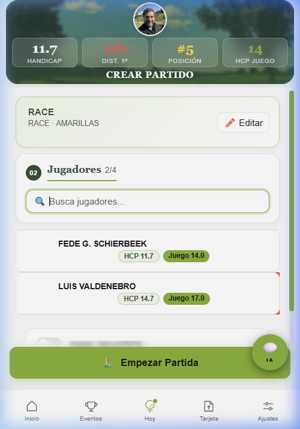
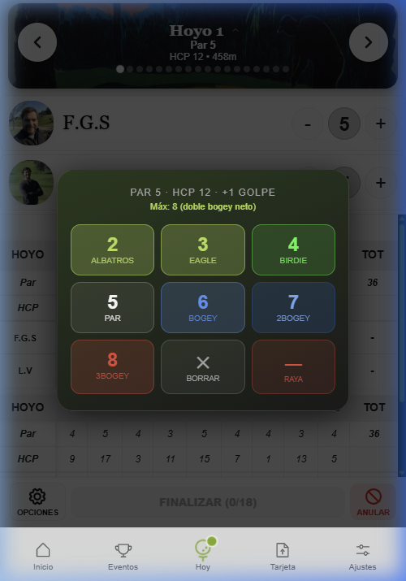

Bloque 3
Registrar una Ronda
Hay tres formas de meter una tarjeta en la app. Cada una tiene su caso ideal. Antes de explicarlas, entiende la diferencia fundamental entre subir y entregar.
Sección 3.1 — Concepto clave
Subir vs. Entregar
Como jugador, quiero entender por qué a veces meto una tarjeta pero no me suma al ranking.
Subir (estado = completada)
Guardar la tarjeta en tu historial. Siempre afecta a tu hándicap WHS y a tus estadísticas personales.
Entregar (entregas = 1)
Marcar la tarjeta para competición. Solo las entregadas suman puntos al ranking de la liga y ocupan uno de tus slots.
⚠️
¿Por qué puede no entregarse una tarjeta?
1. No alcanza el resultado_mínimo de la temporada.
2. Ya has agotado tus slots y la nueva no mejora tu peor entregada.
3. Slots llenos, sí es mejor, pero no tienes tokens de recompra (ver §3.5).
1. No alcanza el resultado_mínimo de la temporada.
2. Ya has agotado tus slots y la nueva no mejora tu peor entregada.
3. Slots llenos, sí es mejor, pero no tienes tokens de recompra (ver §3.5).
Sección 3.2
Jugar en Directo (Hoyo a Hoyo)
Como jugador, quiero registrar mi puntuación mientras juego, sin tener que acordarme al final.
Flujo
Barra inferior → "Jugar"
→
Seleccionar campo y barras
→
Scorecard
Pantalla de Selección
Busca el club (mínimo 3 caracteres), elige el recorrido (18/ida/vuelta) y selecciona el color de barras. El HCP de juego se ajusta automáticamente.
Scorecard V2 — Entrada de golpes
Cabecera con par, SI y distancia del hoyo. Teclado táctil integrado (botones grandes 1–9) para no activar el teclado del sistema. Botones + / − por jugador para ajuste rápido desde el par sugerido.
Cálculo automático
Los puntos Stableford netos se calculan en tiempo real al introducir cada golpe. Los putts y el GIR se registran automáticamente.
Modo Vista Grande (Accesibilidad)
Se activa desde el botón "Opciones" en la partida o en Ajustes. Presenta los jugadores en tarjetas grandes con botones + y − de alto contraste, ideal para usar con guantes o bajo el sol. El botón "Tarjeta" despliega una mini-scorecard con scroll horizontal centrada en el hoyo actual.
Barra de acción inferior
Modo Normal: Opciones · Vista (rota marcador) · Finalizar · Anular.
Modo Vista Grande: Opciones · Vista · Tarjeta · Fin.
El botón Vista rota entre Stableford, Match, Skins y Sindicato en ambos modos.
Modo Vista Grande: Opciones · Vista · Tarjeta · Fin.
El botón Vista rota entre Stableford, Match, Skins y Sindicato en ambos modos.
Ronda de 9 hoyos
Si tu liga lo permite, puedes jugar solo ida o vuelta. El hándicap se calcula extrapolando a 18 hoyos.

Selección de campo
Scorecard modo normal